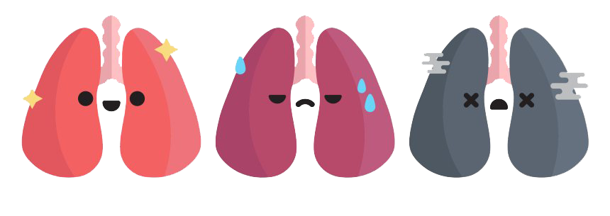

About the Prediction System
HEARTSIGHT
Heartsight is an advanced prediction system that can help determine a patient's likelihood of developing heart disease in the next 10 years. Using a combination of hybrid machine learning techniques such as random forest classifier and MLP classifier, Heartsight analyzes patient data to predict potential heart-related conditions.
The system offers a non-invasive and cost-effective solution that can be accessed globally, providing patients and healthcare professionals with accurate and timely predictions. By leveraging Heartsight's cutting-edge technology, patients can take proactive measures to prevent heart disease and improve their overall health.Assess Your Risk of Heart Disease Here
Regular heart disease checks are important for early detection and prevention of potentially life-threatening heart conditions.
17.9 million
Death annually
35 %
Survival rate
219 billion
Medical cost
34 seconds
Per death
These statistical information are based on World Health Organisation (WHO).
How Heart Disease Develops
Risk Factors and Causes of Heart Disease
Heart disease is a leading cause of death globally, with various risk factors and causes contributing to its development. Recognizing these factors is critical for preventing and managing this disease.
High Blood Pressure
High blood pressure or hypertension occurs when blood exerts excessive force against artery walls, leading to damage and impeding blood flow, thus increasing the risk of having heart disease.
High cholesterol
High levels of "bad" cholesterol (LDL cholesterol) leads to plaque buildup in arteries, narrowing them and reducing blood flow to the heart, increasing the risk of heart disease and heart attacks.

Smoking
Smoking increases the risk of heart disease by damaging blood vessels, causing them to narrow and making it harder for blood to flow through them. Blood clots may also form, increasing the risk of heart attacks and strokes.
Heart Disease symptoms
what are they and should I call the doctor?
It is caused by a variety of factors, including lifestyle choices such as unhealthy diet, lack of physical activity, and tobacco use, as well as underlying medical conditions.
According to WHO, cardiovascular diseases (CVDs) are the leading cause of death worldwide, with an estimated 17.9 million deaths each year.
How to Prevent Yourself
Prevention of Heart Disease
You can reduce the risk of heart disease and safeguard your
cardiovascular health
with proactive measures if you:
Manage stress levels and practice relaxation techniques
Chronic stress can take a toll on your heart health, so finding ways to manage stress and relax can be beneficial for overall heart health.
Read moreQuit smoking and avoid secondhand smoke
Smoking damages the heart and blood vessels, increasing the risk of heart disease, and exposure to secondhand smoke can also be harmful.
Read moreMaintain a healthy weight and manage your BMI
Being overweight or obese can lead to a host of health problems, including heart disease, so it's important to maintain a healthy weight through diet and exercise.
Read moreEat a heart-healthy diet meal consistently
A balanced diet with plenty of whole foods can help keep your heart healthy and reduce the risk of heart disease.
Read moreExercise regularly
Regular exercise of at least 150 minutes per week can improve heart health by lowering blood pressure, managing weight, and reducing stress.
Read more
Keep your blood pressure and cholesterol levels in check
High blood pressure and cholesterol can increase the risk of heart disease, so it's important to get them checked regularly and take medication if needed.
Read moreHow to perform first aid
Why do I need first aid
Learning first aid is like having a superhero utility belt, it can save lives at anytime anywhere - be ready for any emergency!